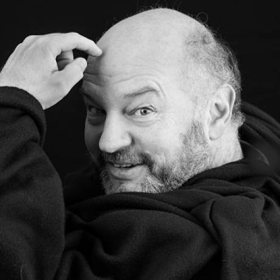

Program overview
Click here to download the full program (PDF). The program is subject to change.

Speakers
Keynote lecture

Prof. Dr. Chris de Zeeuw
Keynote lecture
The keynote lecture will be provided by Prof. Dr. Chris de Zeeuw from Erasmus University Rotterdam and Netherlands Institute for Neuroscience.
Title: Orchestration of Behavior by the Olivocerebellar System.
Symposia
There will be three symposia, each taking 1 hour.
Symposium 1
Relevance of the cerebellum in the clinical setting
Summary of the session
Freek Hoebeek
from UMC Utrecht will present on "The developing cerebello-thalamic connection in health and disease"
Stacha Reumers
from Radboud UMC will present on the cerebellum and cognition: impairment following cerebellar stroke
Stefanie Keulen
from Vrije Universiteit Brussel will present on ....
Symposium 2
Progress in cerebellar research techniques
summary of the session
Jana Klaus
from Utrecht University will present "Measuring cerebellar signals using EEG and MEG"
Wietske van der Zwaag
from the Spinoza Centre for Neuroimaging will present "Structural and functional imaging of the human cerebellum in-vivo using 7T MRI"
Roderick Maas
from Radboud UMC will present on non-invasive stimulation of the cerebellum
Symposium 3
Fundamental cerebellar research
Summary of the session
Aleksandra Badura
from Erasmus MC Rotterdam will present on the role of cerebellum in autism – what can we learn from monogenic murine autism models?
Wietske Zuiderbaan
from the Spinoza Centre for Neuroimaging will present on "Topographic connectivity in the cerebellum for different cognitive states"
Neville Magielse
from Forschungzentrum Jülich and the Max Planck Institute Leipzig will present data on the primate expansion of cerebellar crura I-II: primate-general or human-unique scaling?
Poster session
Content will be updated closer to the meeting.